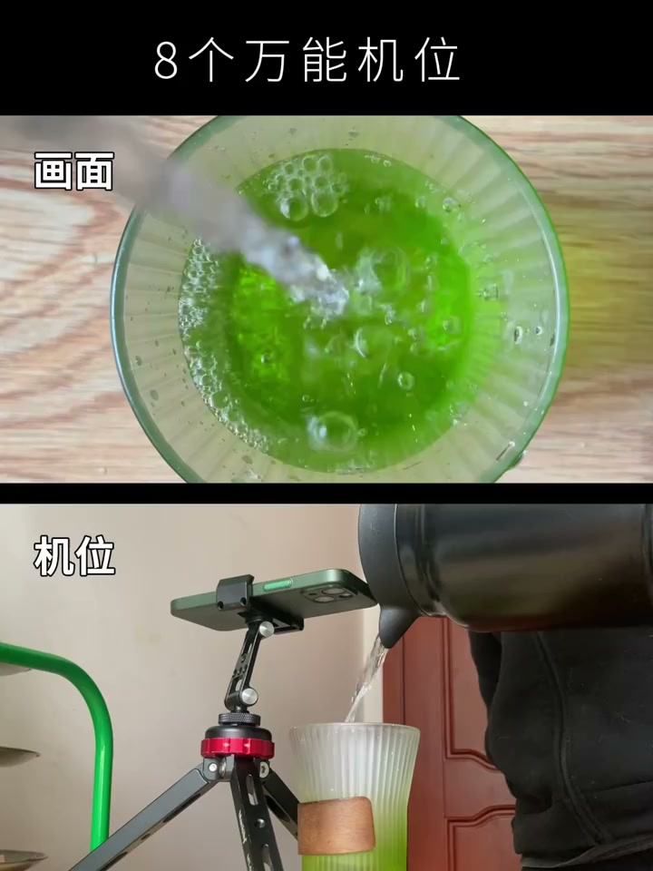
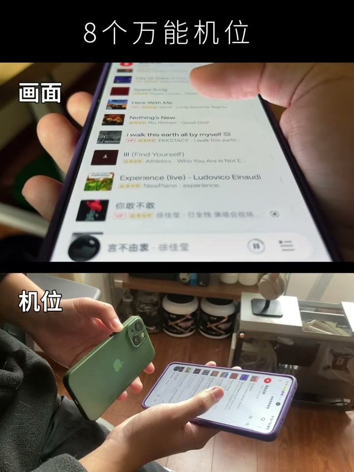
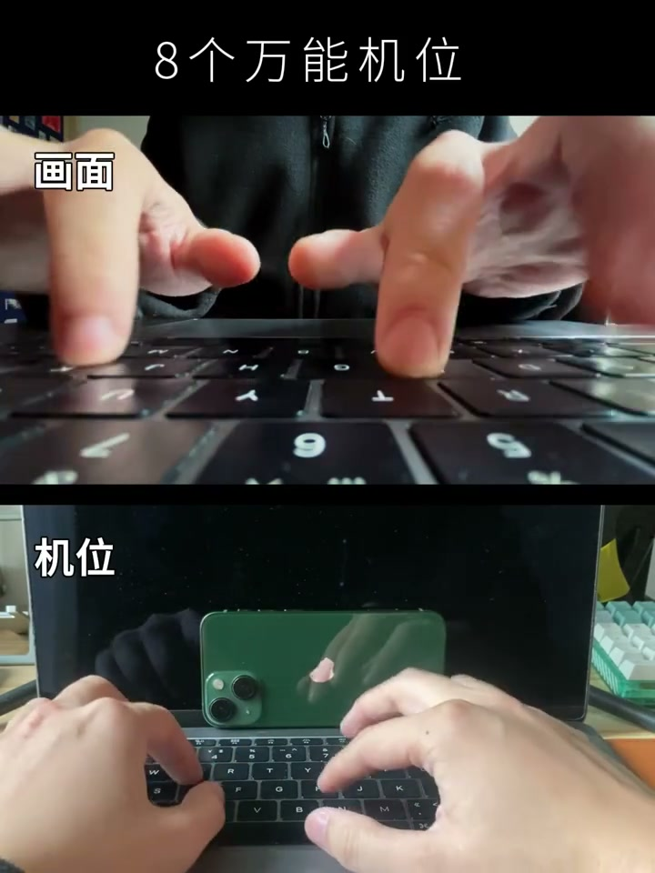

01
中文
为什么同样的人物，不同角度拍出来感觉完全不同？
EN
Why does the same person feel so different from different angles?
表达提示different angles（不同角度）

Scene English · 拍摄 · 机位语言
Learn 8 Camera Positions in 16 Seconds
🎧 语音讲解
Camera Positions Are Narrative Stances
情境从高角度到低角度、从正面到侧面，不同机位的视觉语言完全不同。
为什么同样的人物，不同角度拍出来感觉完全不同？
Why does the same person feel so different from different angles?
表达提示different angles（不同角度）
机位选择就是用镜头说话，每个角度都在传递一种态度。
Choosing a position is speaking with the lens—every angle carries an attitude.
表达提示carry an attitude（传递态度）
高角度让观众俯视主体，主体显得脆弱渺小。
A high angle makes viewers look down on the subject—fragile and small.
表达提示high angle（高角度）
低角度让观众仰视主体，主体显得强大重要。
A low angle makes viewers look up—powerful and important.
表达提示low angle（低角度）
平视让观众平等看待主体。
Eye level makes viewers see the subject as an equal.
表达提示eye level（平视）
different angles（不同角度
carry an attitude（传递态度

The 8 Positions at a Glance
情境正面平视建立平等关系，仰拍显强大，俯拍显渺小，侧拍是旁观，背后是代入，过肩是对话，低角度特写强调质感，顶拍是上帝视角。
正面平视最常用，建立平等关系。
Front eye-level is the most common—it builds an equal relationship.
表达提示front eye-level（正面平视）
正面仰拍，主体强大、威严。
Front low-angle makes the subject powerful and imposing.
表达提示powerful（强大威严）
正面俯拍，主体脆弱、渺小。
Front high-angle makes the subject fragile and small.
表达提示fragile（脆弱渺小）
侧面平视是观察者视角。
Side eye-level is the observer's viewpoint.
表达提示observer viewpoint（旁观视角）
背后跟拍有代入感和未知感。
A back tracking shot brings immersion and the unknown.
表达提示back tracking（背后跟拍）
过肩镜头有对话感和亲密感。
An over-the-shoulder shot feels conversational and intimate.
表达提示over-the-shoulder（过肩镜头）
低角度特写强调细节和质感。
A low-angle close-up stresses detail and texture.
表达提示texture（质感）
顶拍是上帝视角，展示全貌。
Top-down is the god's-eye view, showing everything.
表达提示top-down（顶拍）
front eye-level（正面平视
powerful（强大威严

Narrative Motivation Behind Cuts
情境你站在什么位置拍，就是在告诉观众该怎么看这个人；机位切换需要叙事理由。
8个机位的本质是8种叙事立场。
These eight positions are eight narrative stances.
表达提示narrative stances（叙事立场）
你站在什么位置拍，就是在告诉观众你该怎么看这个人。
Where you stand tells viewers how to see the person.
表达提示how to see（怎么看待）
拍摄人物时尝试仰拍，感受画面气质的变化。
Try a low angle on people and feel the mood shift.
表达提示mood shift（气质变化）
加入一段背后跟拍，增加代入感。
Add a back tracking shot for immersion.
表达提示add immersion（增加代入感）
机位切换需要有叙事理由，不是无意义地切来切去。
Every position change needs a narrative reason—not random cutting.
表达提示narrative reason（叙事理由）
narrative stances（叙事立场
how to see（怎么看待

Where Positions Apply
情境无论用什么设备，机位选择的逻辑一样；固定机位直播切换频率有限。
所有视频拍摄场景都适用，无论用什么设备，机位选择的逻辑一样。
It applies to all shooting—the logic is the same whatever the device.
表达提示same logic（逻辑相同）
如果不是故意表达脆弱渺小，慎用俯拍。
Unless you mean fragile and small, use high angles sparingly.
表达提示use sparingly（慎用）
有意识地在一次拍摄中使用三种以上机位。
Deliberately use more than three positions in one shoot.
表达提示three or more positions（三种以上机位）
固定机位的直播切换频率有限。
Fixed-camera live streams can't switch positions often.
表达提示fixed live streams（固定机位直播）
same logic（逻辑相同
use sparingly（慎用
说机位即态度
说8个机位
说背后跟拍
说顶拍展示
说叙事动机
全平视最平淡。
仰拍角度别太夸张。
俯拍暗示弱小。
机位切换要有理由。
侧面适合纪实。